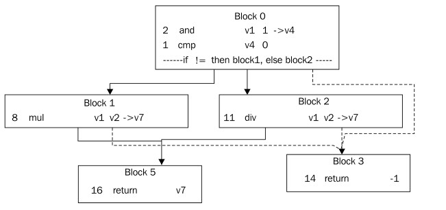
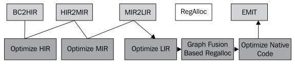
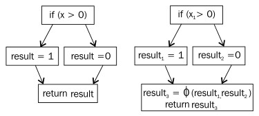

2.6 代码流水线
假设JIT编译器前端已经完成对字节码的处理，将之转换为另一个更便于处理的中间格式了，那接下来该干什么？通常情况下，代码会经过几次不同层级的转换和优化，其中的每一次转换都是增强了代码的平台相关性。最终，生成的本地代码会被放到代码缓冲区中，以备调用。
一般来说，尽可能的保持JIT编译器的可移植性。因此，大部分优化优化工作都是在代码还是平台无关的时完成的，这样便于将JIT编译器移植到其他平台上。但是，为了达到工业级性能要求，低级的、平台相关的优化工作还是要完成的。
本节会对JIT编译器如何将字节码编译为本地代码，以及这其中涉及到的不同阶段做详细介绍。虽然其中的内容都是以JRockit JIT编译器为例进行介绍的，但生成本地代码的整个过程也适用于其他JVM。
2.6.1 为什么JRockit没有字节码解释器
JRockit JVM所使用的的代码生成策略是完全JIT编译。
1998年，JRockit项目刚刚发起，架构师们意识到Java非常适合服务器端应用程序的开发，因此JRockit在设计之初就被定位为一款服务器端JVM。大多数服务器端应用程序的运行时间很长，对启动时间并没有什么要求，因此，对于只在服务器上运行的JVM来说，程序的运行效率比代码生成时间更重要。这为我们省了不少事，既不用操心解释器的实现，也不用管代码在解释器和JIT编译器之间的切换。
人们很快注意到，将每个方法都编译一遍会大大延长启动时间。起初，这不是什么大问题，因为服务器端应用程序在启动之后就会一直运行很长时间。
后来，JRockit因其高性能而成为一款主流JVM，修改代码流水线使其满足客户端和服务器端不同需求的呼声日益高涨。但即便如此，JRockit也没有特意去实现字节码解释器，而修改了JIT编译器，使其区别对待热方法和冷方法，并且当第一次调用某个方法时先快速编译一个优化程度不高的版本出来。此举大大加快的应用程序的启动速度，但和使用解释器的启动速度相比还是有些差距的。
另一方面，在开发过程中，使用解释器更便于调试Java源代码。字节码中包含了类似于变量名和行号等的元信息，方便调试器进行定位。为了支持调试功能，JRockit不得不在编译字节码到本地代码的过程中始终附带着这些信息，但解决了元信息的簿记问题之后，也就没必要再添加解释器了。就我们所知，JRockit也是唯一一款允许用户调试优化后代码的虚拟机。
JRockit纯编译策略的一个主要问题是，代码膨胀（可以通过对代码缓冲区中的无用代码执行垃圾回收来解决）和大方法编译时间过长（可以通过让JIT编译器先生成优化程度不高的编译版本来解决）。
某些情况下，纯编译策略的伸缩性不太好。例如，JRockit有时候需要使用较长的时间来编译一个较大的方法，典型情况是编译JSP文件。不过，一旦编译完成，访问该JSP的相应时间会比解释执行要短。
如果在使用JRockit时，遇到了代码生成的相关问题，请参考本章 **如何控制JRockit中的代码生成**一节中介绍的方法处理。
2.6.2 启动
JRockit JVM的核心是其运行时系统，它持续跟踪其虚拟执行环境中各组成部分的变化情况，把控代码生成器编译方法的时机和优化程度。
为了简化任务，启动JVM时首先要做的就是跳转到Java应用程序的main方法，这是通过JVM的标准JNI调用完成的，就像其他本地应用程序通过JNI执行Java代码一样。
启动JVM方法的过程涉及到一系列复杂的操作和对相关依赖的处理，会调用很多其他Java方法，此外，为了解析main方法，还会生成一些JVM内部函数。最后，当做好准备，并已经将main函数编译为本地方法时，JVM就可以开始执行，并将控制权从JVM移交给Java程序。
要想更好的理解JRockit的启动过程，可以在命令行中使用
-Xverbose:codegen选项执行Java程序。于是乎你会看到，即便是运行一个简单的“Hello World”程序，也需要编译将近1000个方法，不过，所需的时间并不长。在Intel Core2机器上，总体代码生成时间应该不超过250毫秒。
2.6.3 运行时代码生成
使用完全JIT编译策略时需要注意延迟编译的处理。如果以深度优先的方式编译完所有方法的话，时间消耗过大，而且引用类时没必要立即编译类中的所有方法，因为其中的方法有可能一个都不会被调用。此外，控制流经过Java程序时有可能会选择一条不同的执行路径，很明显，这对使用混合编译模式的JVM来说不是个问题，因为其中的所有方法都是先解释执行的，无需提前编译。
2.6.3.1 Trampoline
针对上面提到的问题，JRockit的解决方案是，为被调用的方法在还没有生成本地代码之前，先生成一份存根代码（stub code），即 Trampoline，其中包含了几行临时代码。当该方法首次被调用时，会跳转到Trampoline处执行，而它的任务就是通知JRockit要给为方法生成本地代码。代码生成器处理该请求，并返回生成的代码的起始地址，然后Trampoline跳转到具体地址开始执行。对用户来说，看起来就像是直接调用Java方法，但实际上它是在首次调用时才生成的。
0x1000: method A 0x3000: method C
call method B @ 0x2000 call method B @ 0x2000
0x2000: method B (trampoline) 0x4000: The "real" method B
call JVM.Generate(B) -> start ...
write trap @ 0x2000
goto start @ 0x4000在上面的例子中，method A的起始地址在0x1000，它在调用method B时以为其起始地址是0x2000，这时method B第一次被调用。0x2000位置处的存根代码就是Trampoline，它告知JVM要为method B生成代码。此时，程序会一直等待，直到代码生成器完成工作，并返回method B的真正地址，再跳转到该地址开始执行。
注意，可能对method B的调用可能会有多处，即都指向Trampoline的地址0x2000。例如上面例子中method C。这些对method B的调用应该修改为真正的method B的地址，而不是每次都重新生成一边method B。JRockit的解决办法时，当Trampoline运行过一次之后，在0x2000处写入一个陷阱指令 "trap(processor instruction))")，如果此时Trampoline再被调用，被JRockit会捕获到该事件，并将调用指向真正的method B。这个过程称为回填（back patching）`。
不仅是方法生成，回填技术常用于虚拟机的各种代码替换操作。例如，当某个热方法被重新编译为更高效的版本时，就是在该方法的之前版本的起始位置上设置一个陷阱（trap），当再次调用该方法时会触发异常，虚拟机捕获到该异常后会将调用指向新生成的代码的位置。
注意，这只是个不得已的办法，因为我们没有足够的时间遍历所有已经编译过的代码去查找所有需要更新的调用。
当没有任何引用指向某个方法的老的编译版本时，该版本就可以由运行时系统回收掉，释放内存资源。这对于使用完全JIT编译策略的JVM来说非常重要，因为编译后的代码量非常大，要避免出现内存耗尽的情况。
2.6.3.2 代码生成请求
在JRockit中，当某个方法需要执行JIT编译时，运行时系统会向代码生成器发出 代码生成请求，这种请求分为同步和异步两种类型。
同步代码生成请求包括：
- 以指定的优化等级为JIT生成方法
- 以指定的优化等级编译已经生成的方法
异步代码生成请求是指：
- 当某些前提假设失效时重新生成代码，例如强制为某个方法重新生成代码，或者为某个方法的本地代码打补丁
从内部实现上讲，JRockit按照不同的请求类型，将同步代码生成请求保存在 代码生成队列或 代码优化队列中。根据不同的系统配置，可能会使用一个或多个线程来完成代码生成或代码优化的请求。
代码生成队列中的请求除了一些特殊情况外，例如在启动JVM时有些方法要直接生成本地代码（译者注，这句话的内容是我猜的，否则话说不圆），剩下的都是Trampoline发起的代码生成请求。这些代码生成请求会阻塞应用程序的执行，直到完成代码生成请求，返回生成的代码在内存中的位置，保证调用方法能找到生成的代码的正确位置。
2.6.3.3 代码优化请求
当JVM发现某个方法够热时，也就是运行时系统发现已经用了足够多的时间来运行某个方法，应该进行优化时，会发起一个优化请求，添加到优化队列中。
相比于代码生成队列来说，优化队列的运行优先级较低，因为对于代码执行来说，它并不是必须的，只是为提高性能而存在的。虽然增加了编译时间，不过通常来讲，经过优化的代码的执行效率会比代码生成请求中生成的代码高几个数量级。
2.6.3.4 栈上替换（on-stack replacement，OSR）
当完成某个方法的优化请求后，需要替换掉该方法的现存版本。正如前面的提到的，会使用陷阱指令覆盖（trap instruction）现存版本的方法入口点，于是再次调用该方法时会通过回填技术指向新的、优化过的版本。
当JVM发现应用程序花费了大量时间来执行某个方法时，就会将该方法标记为热方法，准备进行优化。但是，当某个方法中包含了需要执行很长时间的循环时，尽管仍会对该方法进行优化，尽管已经在该方法的老版本的方法入口点上写入了陷阱指令，但该方法的老版本仍会继续执行下去。很显然，在这种情况下，JVM为该方法所作的优化要想生效就只能等待对该方法的下一次调用，而对于那些无限循环来说，则永远不会生效。
有些优化器会在方法执行过程中，使用优化后的版本替换掉现有的版本，这就是所谓的 栈上替换（on-stack replacement，OSR）。实现OSR需要额外记录大量信息，此外，尽管在完全JIT编译策略下可以实现OSR，但在有解释器辅助的环境中，实现起来更容易。因为可以退化为解释执行，替换后再执行编译后的代码（译者注，这句话是我编的，原文是“Though this is possible in a completely JIT-compiled world, it is easier to implement where there is an interpreter to fall back to”）。
不过，JRockit中并没有实现OSR，因为复杂性太高。因此，即使已经生成了优化后的方法，还是要等下一次调用才会生效。
对实际使用情况的调研表明，舍弃OSR并没对性能有很大影响，唯一出问题的场景是一些写的比较烂的基准测试程序，这些程序在主方法将里所有的计算都放在了一个大循环中。针对这种问题，其实只要将其中的计算操作提出来放到一个单独的方法中，循环调用就可以了。在第5章中将会详细讨论有关基准测试的方方面面。
2.6.3.5 簿记（bookkeeping）
JVM中的代码生成器需要做很多与运行时系统相关的簿记任务。
2.6.3.5.1 GC所需的对象信息
为了准确完成垃圾回收工作，垃圾回收器需要在程序运行的任意时刻清楚的知道Java对象分布在哪些寄存器和栈帧中。这些信息由JIT编译器生成，存储在运行时系统的数据库中。之所以由JIT编译器生成这些信息，是因为在生成代码时可以轻松获得这些信息。在JRockit中，对象元信息被称为 livemap，在第3章中会详细介绍代码生成系统如何与垃圾回收器配合工作。
2.6.3.5.2 源代码与变量信息
簿记系统的另一个任务是要始终保存源代码信息，即使这些代码已经被编译成本地代码，因为JVM必须能够从正在执行的任意指令回溯到对应的Java源代码的具体行。为了实现调试功能，就需要对栈中的内容进行跟踪，甚至是包含了已经优化过的代码的调用栈。
这种需求使得实现更加复杂，因为优化可能会将方法变得面目全非，而且由于 内联的存在，一个方法中可能还包含着另一个方法。即使某个高度优化的方法中抛出了异常，那么输出的调用栈信息中也必须包含正确的行号信息。问题本身并不难解决，簿记系统其实就是一种数据库，只不过比较大、比较复杂而已。JRockit在运行时保存了绝大多数本地指令与Java源代码的映射关系，不过相比于解释执行，在完全JIT编译策略下需要做更多的工作。在Java字节码格式中，局部变量信息和行号信息都被映射到不同的结构中，JRockit所做的就是在整个运行过程中保存住这些映射信息。最终，每个字节码指令都会被转化为0个或多个本地代码指令，而这些指令可能会顺序或乱序执行。
2.6.3.5.3 代码生成所涉及到的前提假设
正如前面讨论的，JVM中的一些前提假设在生成代码时非常重要。如果某条假设条件被打破，就需要发送异步请求，重新为相关方法生成代码。因此，这些前提假设也是JRockit运行时的一部分。
2.6.4 代码生成概述
下面来看一看JRockit JIT编译器如何将Java方法转变为本地代码的，在这个过程中，编译器所作的大部分工作与其他JIT编译类似（其实和其他静态编译器也是类似的），其他部分则略有不同。不过最后结果，生成的本地代码是相同的。
下面的示例代码是一个计算MD5值的哈希函数，本节会通过将该函数编译为本地代码来说明代码生成的整个过程。
public static int md5_F(int x, int y, int z) {
return (x & y) | ((~x) & z);
}2.6.4.1 代码的中间表示
代码生成的第一步是将字节码转换为 **IR（Intermediate Representation，中间表示）**，这样做的目的是为了便于优化器使用，而且其他语言也可以同一种编译器前端进行处理。
JRockit中使用的中间格式与字节码略有不同，有点像编译器教材中使用的格式。大部分编译器都这么干，只不过使用的中间表示的具体格式有些许差别，这取决于被编译的是哪种语言的源代码。
除了前面提到的可移植性问题外，还有两个问题促使JRockit在这一阶段不会对字节码的内容做修改，就是非结构化控制流和运行栈模型，因为这两个问题在不同的硬件寄存器架构上会有些许差别。
由于缺少重构AST的完整信息，JRockit中的方法是一个有向的 控制流图，其节点是 基本块（basic block）。在这里，基本块的定义是，如果基本块中的一条指令得以执行，那么该基本块中的其他指令也会执行。因为我们的示例方法md5_F中不存在分支语句，所以，md5_F可以被转换为一个基本块。
2.6.4.1.1 数据流
基本块中包含0个或多个带有操作数的操作。操作数可以是其他操作（形成表达式树，expression tree）、变量（虚拟寄存器或原子操作数）、常量或地址等，具体内容视IR与硬件表示的相似程度而定。
2.6.4.1.2 控制流
基本块可以有多个入口和出口，控制流图中的边表示控制流。任何控制流，例如goto指令、switch指令，或异常，都会在控制流图中产生一条或多条边。
当控制流遇到方法时，会生成一个指定的起始基本块（start basic block）。没有出口的基本块用于结束方法执行，这样的基本块使用return指令或throw指令结束。
2.6.4.1.3 异常处理
控制流图中对异常的表示稍微复杂一点，就需要生成从每个可能出错的字节码操作到对应的catch语句块的条件跳转。
这样做的结果是，使控制流图中基本块和边的数量呈爆发性的增长，遍历图的算法的复杂度O(|V||E|)大大增加。因此，需要特殊对待基本块中的异常。

上图展示了一个稍微复杂一点的控制流图。方法的入口位于Block 0，出口有3个，2个正常出口（条件分支）和异常处理。这就是说，Block 0实际上是一个try语句块的一部分，其对应的catch语句块是Block 3，而Block 1和Block 2也是这个try语句块的一部分。退出方法可以通过触发异常，结束语Block 3，或者一直正常执行，结束语Block 5，最终都以return指令作为结束。即使在这个方法中可能会触发异常指令只有Block 2中的div（除0触发异常），try语句块仍会跨越多个节点，因为字节码就是这么写的，或者说，源代码就写成这样了。优化器可以在后续的动作中对此进行优化。
2.6.4.2 JIT编译
下图展示了源代码经过JRockit代码流水线处理的几个不同阶段：
2.6.4.2.1 高级中间表示
上图中的第一个模块BC2HIR是处理字节码的编译器前端，用于快速将字节码转换为IR。这里，HIR是指High-level Intermediate Representation，即高级中间表示。示例函数md5_F中不存在条件跳转或非条件跳转，因此只需一个基本块就可以完整表示出来。
下面的代码是编译为字节码形式的md5_F：
public static int md5_F(int, int, int);
Code: Stack contents: Emitted code:
0: iload_0 v0
1: iload_1 v1
2: iand (v0&v1)
3: iload_0 (v0&v1), v0
4: iconst_m1 (v0&v1), v0, -1
5: ixor (v0&v1), (v0^-1)
6: iload_2 (v0&v1), (v0^-1), v2
7: iand (v0&v1), ((v0^-1) & v2)
8: ior ((v0&v1) | ((v0^-1) & v2))
9: ireturn return ((v0&v1) | ((v0^-1) & v2));JIT编译器首先处理IR，查找代码中是否存在跳转，从而确定基本块，生成控制流图，并使用代码填充基本块，这些代码是通过模拟程序运行时操作数栈中的内容生成的。通过上面的示例代码可以看到，随着JVM对不同字节码指令的执行，操作数栈的内容不断变化，并最终影响到生成的代码。
由于字节码中没有位操作符，所以
javac在实现取反~操作时，是通过与-1(0xffffffff)做异或(xor)完成的。
从上面可以看到，通过使用变量句柄表示操作数栈中变量的值，可以从源代码中重构出表达式。例如，指令iload_0，其含义是“将局部变量0中的值压入操作数栈”，会生成模拟栈中的表达式v0。在示例代码中，模拟器逐步形成了越来越复杂的表达式，当需要将其从栈中弹出时，该表达式就可用于生成最终的代码了。
下面的代码就是 BC2HIR的输出，即HIR：
params: v1 v2 v3
block0: [first] [id=0]
10 @9:49 (i32) return {or {and v1 v2} {and {xor v1 -1} v3}}在JRockitJVM的IR中，每条语句前的注解
@表示了从源代码到汇编语言的映射。@后面的第一个数字表示表达式在字节码中的偏移位置，其后的数字是对应源代码的行号。这些内容就是JRockit中将独立的本地指令映射到Java源代码的复杂元信息的一部分。
局部变量的索引位置是由JRockit分配的，在字节码中各不相同，从而与其他变量相区别。需要注意的是，字节码操作可能以其他操作作为操作数，形成了嵌套的表达式，作为在将字节码操作数栈的内容转换为表达式的过程中所产生的副产品，这实际上是很有用的。通过这种方式，我们得到的是HIR（译者注，在这里，原文是，“High-level Representation”，译者推测为“HIR”），而不是由典型的、扁平化的、编译器生成的使用临时变量赋值的代码，而在这些代码中，操作指令的操作数中可能并不包含其他操作。相比于其他格式，HIR更适合做某些优化，例如检查同一子表达式（其表示形式是一棵子树）是否出现了多次，如果是的话，可以将子表达式合成一个临时变量以避免重复计算。
但在模拟操作数栈的变化以构造HIR的过程中还会遇到一些其他问题，产生这些问题的根本原因在于编译时只能知道栈中的表达式是什么，而无法计算出其确切的值。例如，在某些场景下，栈中对内存的使用就可能会由于上述的不确定性而产生问题，假设编译源代码result = x ? a : b后得到的字节码如下“
/* bytecode for: "return x ? a : b" */
static int test(boolean x, int a, int b);
0: iload_0 //push x
1: ifeq 8 //if x == false then goto 8
4: iload_1 //push a
5: goto 9
8: iload_2 //push b
9: ireturn //return pop当模拟器执行到ireturn指令时，从栈中弹出的值可能是a（局部变量1）或者b（局部变量2）。由于无法使用一个变量来表示a或者b，所以就需要在偏移位置4和8处，将要返回的值压入到栈中，并通过跳转指令的配合完成对弹出的返回值的控制。
BC2HIR模块将字节码转换为控制流图，其中的表达式在计算起来并不复杂。但是它可能会包含其他一些比较少见的、超出了本书讨论范围的内容，其中的大部分实例都与不良结构和操作数栈相关，另一个例子跟monitorenter指令和monitorexit指令相关，这部分内容将在第4章详细阐述。
2.6.4.2.2 中级中间表示
MIR，即中级中间表示（Middle-level Intermediate Representation），介于HIR和LIR（低级中间表示）之间的过渡形式。大部分代码优化工作都是在MIR这个阶段完成的，原因在于大部分优化工作都适用于 三地址代码（three address code），而不是只包含了原子操作的具体指令。从HIR转换到MIR的过程其实只需对表达式树执行中序遍历并创建临时变量即可。由于表达式树不涉及到硬件，因此可以对代码做很多优化，使代码变得更简练些。
如果将表达式树拉平的话，那么对于JIT编译器来说，md5_F函数应该是下面的示例代码那样的。注意，已经不存在嵌套操作了，操作结果都会被写入到临时变量中，供后续操作使用。
params: v1 v2 v3
block0: [first] [id=0]
2 @2:49* (i32) and v1 v2 -> v4
5 @5:49* (i32) xor v1 -1 -> v5
7 @7:49* (i32) and v5 v3 -> v5
8 @8:49* (i32) or v4 v5 -> v4
10 @9:49* (i32) return v4如果JIT编译器正在执行来自优化器的代码生成请求，则在MIR阶段完成大部分代码优化工作。这部分内容将在后文中详细讨论。
2.6.4.2.3 低级中间表示
经过MIR阶段的处理后，代码已经是平台相关的了，依赖于不同的硬件架构，生成不同的LIR（Lower-level IR，低级中间表示）。
由于大部分JRockit都运行在x86平台上，所以下面以x86平台为例对LIR进行说明。不过早在上世纪80年代初期，x86平台就已经出现，使用的是CISC格式的指令，而上一节中介绍的MIR使用的类似于RISC的格式，两者不甚匹配。例如，在x86平台上，逻辑与操作的第一个源地址与目标地址必须相同，这也是在将HIR转换为更适合x86平台模型的MIR时引入一些临时变量的原因。
如果目标平台是SPARC的话，转换工作就会少很多，因为SPARC平台的本地代码格式与JRockit IR类似。
下面的代码是函数md5_F在32位x86平台的LIR：
params: v1 v2 v3
block0: [first] [id=0]
2 @2:49* (i32) x86_and v2 v1 -> v2
11 @2:49 (i32) x86_mov v2 -> v4
5 @5:49* (i32) x86_xor v1 -1 -> v1
12 @5:49 (i32) x86_mov v1 -> v5
7 @7:49* (i32) x86_and v5 v3 -> v5
8 @8:49* (i32) x86_or v4 v5 -> v4
14 @9:49 (i32) x86_mov v4 -> eax
13 @9:49* (i32) x86_ret eax从上面的代码可以看出，为了正确的表达代码的语义，这一步中，在原先的代码中插入了一些平台无关的mov指令。注意，and``xor和or操作，这些操作的第一个操作数与目标结果的位置相同，这是x86平台本身要求的。另外值得注意的是，在这里以硬编码方式指定了对寄存器的使用。按照JRockit调用规范的要求，待返回的整数结果要放到寄存器eax中，所以，寄存器分配器就直接以硬编码的方式指明eax作为存储返回值的寄存器。
2.6.4.2.4 寄存器分配
生成的中间代码可能需要使用多个虚拟寄存器，但现实中，寄存器的数量有限，可能会不够用。因此，在生成本地代码时，JIT编译器需要规划如何使用寄存器，才能将虚拟寄存器映射到真实的寄存器。例如在程序运行中的某个时间点上，如果用到的变量数比可用的物理寄存器多，则需要使用栈帧作为临时存储。这种方式称为 **spilling**，其具体实现是插入移动指令将数据存储到主存中，使用的时候再从主存中取出。 spilling本身会产生性能损耗，因此如何使用 spilling对生成的代码的执行效率影响很大。
对于寄存器分配过程来说，如果实现得比较粗糙，则分配过程可以很快完成，例如在JIT编译的第一个阶段，但如果想要实现好一些，就需要经过大量的计算和规划才行，尤其是在需要同时使用多个变量的场景下。不过，在示例代码中，只用到了较少的变量，做优化时不需要花太多力气，只需要合并/剔除几个mov指令即可。
示例函数md5_F中并没有使用 spilling技术，因为x86平台有7个寄存器可用（在64位平台上有15个寄存器），而这里只用到了3个：
params: ecx eax edx
block0: [first] [id=0]
2 @2:49* (i32) x86_and eax ecx -> eax
5 @5:49* (i32) x86_xor ecx -1 -> ecx
7 @7:49* (i32) x86_and ecx edx -> ecx
8 @8:49* (i32) x86_or eax ecx -> eax
13 @9:49* (void) x86_ret eax上面代码中的每一个指令都有与其具有相同功能的本地平台指令相对应，也就是最终要生成的本地代码。
下面借助一个稍微复杂一点的示例来深入了解 spilling技术。在Spill类的main方法中会同时用到8个变量，计算乘积：
public class Spill {
static int aField, bField, cField, dField;
static int eField, fField, gField, hField;
static int answer;
public static void main(String args[]) {
int a = aField;
int b = bField;
int c = cField;
int d = dField;
int e = eField;
int f = fField;
int g = gField;
int h = hField;
answer = a*b*c*d*e*f*g*h;
}
}使用32位x86作为实验平台，是因为32位x86平台只有7个寄存器可用，而需要用到的变量有8个，因此会将其中一个中间值存储到栈上。下面的代码片段显示了经过寄存器分配处理的LIR：
使用汇编或LIR指令从内存中取值时，通常都是使用方括号将指针括起来，以此表示读取该指针所指的内存位置上的值。例如，在x86平台上，
[esp + 8]表示要读取从栈指针起偏移8个字节的位置的值。
block0: [first] [id=0]
68 (i32) x86_push ebx //store callee save reg
69 (i32) x86_push ebp //store callee save reg
70 (i32) x86_sub esp 4 -> esp //alloc stack for 1 spill
43 @0:7* (i32) x86_mov [0xf56bd7f8] -> esi //*aField->esi (a)
44 @4:8* (i32) x86_mov [0xf56bd7fc] -> edx //*bField->edx (b)
67 @4:8 (i32) x86_mov edx -> [esp+0x0] //spill b to stack
45 @8:9* (i32) x86_mov [0xf56bd800] -> edi //*cField->edi (c)
46 @12:10* (i32) x86_mov [0xf56bd804] -> ecx //*dField->ecx (d)
47 @17:11* (i32) x86_mov [0xf56bd808] -> edx //*eField->edx (e)
48 @22:12* (i32) x86_mov [0xf56bd80c] -> eax //*fField->eax (f)
49 @27:13* (i32) x86_mov [0xf56bd810] -> ebx //*gField->ebx (g)
50 @32:14* (i32) x86_mov [0xf56bd814] -> ebp //*hField->ebp (h)
26 @39:16 (i32) x86_imul esi [esp+0x0] -> esi //a *= b
28 @41:16 (i32) x86_imul esi edi -> esi //a *= c
30 @44:16 (i32) x86_imul esi ecx -> esi //a *= d
32 @47:16 (i32) x86_imul esi edx -> esi //a *= e
34 @50:16 (i32) x86_imul esi eax -> esi //a *= f
36 @53:16 (i32) x86_imul esi ebx -> esi //a *= g
38 @56:16 (i32) x86_imul esi ebp -> esi //a *= h
65 @57:16* (i32) x86_mov esi -> [0xf56bd818] //*answer = a
71 @60:18* (i32) x86_add esp, 4 -> esp //free stack slot
72 @60:18 (i32) x86_pop -> ebp //restore used callee save
73 @60:18 (i32) x86_pop -> ebx //restore used callee save
66 @60:18 (void) x86_ret //return从上面的代码中可以看到，寄存器分配器将方法的开头和结尾处添加了对栈进行操作的相关代码，这是因为在临时存储中间结果时需要知道栈的位置，而且为了存储结果并返回还需要两个由被调用者保存的寄存器。 由被调用者保存的寄存器是指寄存器的值由被调用者负责维护。如果方法在执行过程中需要覆盖 由被调用者保存的寄存器中的值，就必须将寄存器中的值临时存储到栈帧中，并在方法返回之前恢复寄存器中的值。按照x86平台上JRockit的调用约定，Java中使用的 由被调用者保存的寄存器是ebp和ebx。一般情况下，任何调用约定都会包含一些 由被调用者保存的寄存器，因为每个寄存器的值在使用过之后都有可能会被销毁，从而导致使用更多的 spilling代码来存储数据，进而影响程序的执行效率。
2.6.4.2.5 生成本地代码
经过寄存器分配后，IR中的每个操作就都可以与x86平台上机器语言的某个本地操作一一对应上了。现在，JIT编译器的工作就只剩下在LIR中插入一些mov指令，以便程序可以使用相应的参数了（在示例代码中，程序会将传入参数的值按照调用约定移动到预先定义好的位置，即之前分配的寄存器中）。有时候，尽管寄存器分配器经过计算认为可以直接将第一个参数存入到ecx中，但编译器并不理会这些，仍会按照调用约定工作，将第一个参数存入到eax中（这里需要额外的mov指令）。在示例代码中，按照JRockit调用约定，参数x、y和z分别被存储到eax、edx和esi中。
在x86平台上，从JRockit中转储出的汇编代码使用的是Intel风格的语法，其将第一个操作数作为目的操作数，例如
and ebx eax的意思是ebx = ebx & eax。
下面的代码展示了存储于代码缓冲区中的最终的本地代码：
[method is md5_F(III)I [02DB2FF0 - 02DB3002]]
02DB2FF0: mov ecx,eax
02DB2FF2: mov eax,edx
02DB2FF4: and eax,ecx
02DB2FF6: xor ecx,0xffffffff
02DB2FF9: and ecx,esi
02DB2FFC: or eax,ecx
02DB2FFF: ret2.6.4.3 代码优化
相比于普通的JIT编译，优化热方法并重新生成代码在执行时略有不同。其实，优化编译器作用于代码流水线的整个过程，围绕着代码生成，在各个阶段中插入相应的优化模块。

2.6.4.3.1 概述
不同的优化方法适用于不同层级的IR，例如，对于 HIR，常用的优化方法有**全局数值编号（global value numbering）**，使用一颗子树替换某个表达式的两颗相同子树，以及临时变量赋值等（temporary variable assignment）。
在 MIR中常用的一种优化是转换为SSA形式（Single Static Assignment Form，静态单赋值形式），即确保任意变量只有一种定义。SSA转换几乎已成为现代商用编译器的必备优化手段之一，因为在其基础上可以有效的实现多种代码优化技术，而且优化效果也比未使用SSA转换的代码更好。

上面的流图展示了SSA转换前后的区别。程序返回的变量result的值依赖于变量x的值，可能是0或者1。由于SSA形式要求每个变量只能有一种赋值，因此，变量result被表示为3个不同的变量。可以看到，在return语句中，变量result可以是result1或result2,为了表示出 或的意思，特意使用了一个 连接符（join operator）Φ（这是个希腊字母，读音为 phi）。但实际上，目前的硬件平台都不支持这样的操作，所以，在最终生成本地代码之前还需要转换回普通的形式。这种反向转换一般是使用提前赋值来替换连接符，连接操作的每个来源都会产生一条流路径。
很多经典的代码优化方法，例如**常量折叠（constant propagation）**和**复制传播（copy propagation）**，应用于经过SSA转换的代码时都能运行的更有效率，很大程度上是因为经过处理后，变量的定义都不再有任何歧义。有关SSA的内容超出了本书的范围，而且已经有很多文献做了介绍，这里不再赘述。
LIR是平台相关的，且没有经过寄存器分配这个过程，所以可以在这里做一些指令转换，使生成的本地操作序列更有效率。例如，在x86平台上，为了加快拷贝数组的速度，可以用Intel特有的SSE4指令替换普通的循环拷贝操作。
在生成优化代码时，如何分配寄存器是非常重要的。编译器教材上都将寄存器分配问题作为图的着色问题处理，这是因为同时用到的两个变量不能共享同一个寄存器，从这点上讲，与着色问题相同。同时使用的多个变量可以用图中相连接的节点来表示，这样，寄存器分配问题就可以被抽象为“如何为图中的节点着色，才能使相连节点有不同的颜色”，这里可用颜色的数量等于指定平台上可用寄存器的数量相同。不过，遗憾的是，从计算复杂性上讲，着色问题是NP-hard的，也就是说现在还有没有一个高效的算法（指可以在多项式时间内完成计算）能解决这个问题。但是，着色问题可以在线性对数时间内给出近似解，因此大多数编译器都使用着色算法的某个变种来处理寄存器分配问题。
JRockit优化编译器中的寄存器分配器使用了基于**Graph Fusion**的技术，该技术作用于IR，是对标准的图着色近似算法的扩展。Graph Fusion的一大特点的是，会提前处理流图中的边，这样可以产生更少的 spilling代码，因此，如果能在处理之前找出代码的热点区域，就能够以更有效率的方式完成优化编译的工作，生成的代码在运行时也就能更加高效。这种方法的代价是，在融合代码时，为了生成完整的方法，需要插入一些额外的对寄存器进行整理、存储栈地址寄存器（esp）和基址寄存器（ebp）的代码，稍稍影响执行效率。
最后，优化编译器会对生成的本地代码执行 **窥孔优化（peephole optimization）**，使用将生成代码中的部分指令替换为更高效的本地指令，然后再提交给JRockit供其调用。
一般来说，清空寄存器是通过使其对自身做异或操作完成的。相比于执行指令
mov eax, 0，与自身做异或操作的执行效率更高一些。这就是窥孔优化的一种。再举一个例子，在x86平台上，如果某项计算需要先乘以2的n次方，再与某数相加，那么就可以使用`lea`指令代替完成。
2.6.4.3.2 工作原理
本书的主旨是介绍JRcokit代码流水线相关的算法和优化策略，在这一节，先简单谈谈JVM如何利用运行时提供的反馈信息来优化代码。
一般情况下，相比于那些对执行速度没什么要求的JIT编译来说，JRockit执行优化编译需要花费10到100倍的时间才能完成任务，因此，只优化那些热方法就显得很必要了。
简单来说，插入到代码流水线各个阶段的优化模块是以下面的方式工作的：
do {
1. 舍弃方法调用，以内联的方式将控制流展开
2. 对内联后生成的大块代码做各种优化，精炼之
} while ("有足够的时间" && "有足够的精力（即需要优化的代码的数量不会增长得太快));Java是面向对象的，会用到很多getter``setter和其他细碎的方法调用，而编译器在开始优化的时候却不得不假设这些方法是很复杂的，因为它不知道这些方法实际上是干什么的，由此而产生诸多不必要的麻烦。所以，为了简单起见，小方法通常会被 **内联**。相对来说，JRockit比较激进，会根据运行时采集到的信息，按照适当的优先级，尽可能的将热点执行路径中所有调用做内联处理。
对于静态编译环境来说，过于激进的内联往往适得其反，而且生成方法过大的话，会增加指令缓冲区的负担，降低执行效率。而在动态运行时环境中，可以对运行时数据进行采样，从而更准确的判断出应该对哪些方法做内联处理。
经过内联这一步之后，包含了内联代码的方法通常会变得很大，这时JIT优化编译器会使用各种优化方法来精简代码，例如，常量折叠，基于逃逸分析剔除某些表达式，剔除死代码等等。此外，在特定条件下，对统一内存区域的重复存取也会被剔除。
经过上述重重优化后的代码，往往会比内联之前的原始代码更小，这就是优化编译的威力。
The runtime system can perform relatively large simplifications, given relatively little input. Consider the following program that implements the representation of a circle by its radius and allows for area computation:
事实上，即使要处理的代码量很少，优化编译系统仍然需要做很多优化工作。以下面的代码为例，类Circle可以根据半径计算出面积。
public class Circle {
private double radius;
public Circle(int radius) {
this.radius = radius;
}
public double getArea() {
return 3.1415 * radius * radius;
}
public static double getAreaFromRadius(int radius) {
Circle c = new Circle(radius);
return c.getArea();
}
static int areas[] = new int[0x10000];
static int radii[] = new int[0x10000];
static java.util.Random r = new java.util.Random();
static int MAX_ITERATIONS = 1000;
public static void gen() {
for (int i = 0; i < areas.length; i++) {
areas[i] = (int)getAreaFromRadius(radii[i]);
}
}
public static void main(String args[]) {
for (int i = 0; i < radii.length; i++) {
radii[i] = r.nextInt();
}
for (int i = 0; i < MAX_ITERATIONS; i++) {
gen(); //avoid on stack replacement problems
}
}
}运行时，附加参数-Xverbose:opt,gc以便让JRockit打印出垃圾回收和代码优化信息，如下所示：
hastur:material marcus$ java –Xverbose:opt,gc Circle
[INFO ][memory ] [YC#1] 0.584-0.587: YC 33280KB->8962KB (65536KB), 0.003 s, sum of pauses 2.546 ms, longest pause 2.546 ms
[INFO ][memory ] [YC#2] 0.665-0.666: YC 33536KB->9026KB (65536KB), 0.001 s, sum of pauses 0.533 ms, longest pause 0.533 ms
[INFO ][memory ] [YC#3] 0.743-0.743: YC 33600KB->9026KB (65536KB), 0.001 s, sum of pauses 0.462 ms, longest pause 0.462 ms
[INFO ][memory ] [YC#4] 0.821-0.821: YC 33600KB->9026KB (65536KB), 0.001 s, sum of pauses 0.462 ms, longest pause 0.462 ms
[INFO ][memory ] [YC#5] 0.898-0.899: YC 33600KB->9026KB (65536KB), 0.001 s, sum of pauses 0.463 ms, longest pause 0.463 ms
[INFO ][memory ] [YC#6] 0.975-0.976: YC 33600KB->9026KB (65536KB), 0.001 s, sum of pauses 0.448 ms, longest pause 0.448 ms
[INFO ][memory ] [YC#7] 1.055-1.055: YC 33600KB->9026KB (65536KB), 0.001 s, sum of pauses 0.461 ms, longest pause 0.461 ms
[INFO ][memory ] [YC#8] 1.132-1.133: YC 33600KB->9026KB (65536KB), 0.001 s, sum of pauses 0.448 ms, longest pause 0.448 ms
[INFO ][memory ] [YC#9] 1.210-1.210: YC 33600KB->9026KB (65536KB), 0.001 s, sum of pauses 0.480 ms, longest pause 0.480 ms
[INFO ][opt ][00020] #1 (Opt) jrockit/vm/Allocator.allocObjectOrArray(IIIZ)Ljava/lang/Object;
[INFO ][opt ][00020] #1 1.575-1.581 0x9e04c000-0x9e04c1ad 5.72 ms 192KB 49274 bc/s (5.72 ms 49274 bc/s)
[INFO ][memory ] [YC#10] 1.607-1.608: YC 33600KB->9090KB (65536KB), 0.001 s, sum of pauses 0.650 ms, longest pause 0.650 ms
[INFO ][memory ] [YC#11] 1.671-1.672: YC 33664KB->9090KB (65536KB), 0.001 s, sum of pauses 0.453 ms, longest pause 0.453 ms.
[INFO ][opt ][00020] #2 (Opt) jrockit/vm/Allocator.allocObject(I)Ljava/lang/Object;
[INFO ][opt ][00020] #2 1.685-1.689 0x9e04c1c0-0x9e04c30d 3.88 ms 192KB 83078 bc/s (9.60 ms 62923 bc/s)
[INFO ][memory ] [YC#12] 1.733-1.734: YC 33664KB->9090KB (65536KB), 0.001 s, sum of pauses 0.459 ms, longest pause 0.459 ms.
[INFO ][opt ][00020] #3 (Opt) Circle.gen()V
[INFO ][opt ][00020] #3 1.741-1.743 0x9e04c320-0x9e04c3f2 2.43 ms 128KB 44937 bc/s (12.02 ms 59295 bc/s)
[INFO ][opt ][00020] #4 (Opt) Circle.main([Ljava/lang/String;)V
[INFO ][opt ][00020] #4 1.818-1.829 0x9e04c400-0x9e04c7af 11.04 ms 384KB 27364 bc/s (23.06 ms 44013 bc/s)
hastur:material marcus$就这些，然后程序就结束运行了。
在本章的末尾会对代码生成器打印的各种日志做详细介绍，在第3章中会介绍内存管理器打印的相关日志。
在这里，除了优化编译器对4个热方法（其中两个是JRockit的内部方法）做了优化编译之外，更需要注意的是，在优化编译之后，垃圾回收也不再执行了。这是因为，经过对代码的分析后，优化编译器发现在getAreaFromRadius方法创建的Circle对象只是用来计算面积的，只存活于该方法内，尤其是在在将方法调用c.getArea内联进来之后，这一点更加明显（译者注，逃逸分析）。此外，Circle对象中只包含一个double类型的成员变量radius，在明确了该对象的存活范围后，就可以使用double类型的变量来表示该对象了（译者注，标量替换）。在剔除了用于创建对象的内存分配操作了后，也就不会再有垃圾回收的操作了。
当然，这只是个小实验，其中所表达的避免重复创建Circle对象的意思也很容易理解。不过，如果能够合理实现优化算法的话，对于大型面向对象应用程序也是适用的。
其实，在检测程序的某些运行模式方面，运行时确实比人工更可靠，总能够发现人工难以发现的优化点，除外，优化编译器为应用各种优化方法而设定的前提条件也很少失效。从这些方面讲，自适应运行时确实是威力惊人。
未经优化的Java代码执行效率较差，javac需要在将源代码编译为字节码时做一些基本优化，实现相关语言特性，例如，使用+操作符连接字符串是一个语法糖，编译器需要创建StringBuilder对象，并调用其append方法来完成字符串连接的操作。类似这种将语法糖转换为优化程度更高的代码的操作，对于优化编译器来说不算什么问题。例如，由于StringBuilder的实现是已知的，所以我们可以告知编译器其方法是没有任何副作用的，即使编译器还没有生成对这些方法的调用。
类似的操作也适用于装箱类型（boxed type）。在字节码层面，装箱类型会被隐式的转换为对象（例如java.lang.Integer类）。应用一些传统的优化方法，例如逃逸分析（译者注，还有标量替换），可以将操作对象转换为操作原生类型，这样就可以剔除实现装箱类型所需的内存分配操作。